メニュー
トップ >> ダンジョン >> 試練のダンジョン
試練のダンジョンとは
入場方法
ソロダンジョン
パーティーダンジョン
クリア報酬経験値
試練欠片を入手可能な秘密ダンジョン
報酬アイテム
・Lv400以上のキャラクターのみ入場可能です。
・制限時間は一律30分。
・1日の入場回数制限はないですが、報酬経験値は1日2回のみ獲得可能。3回目以降は試練の証のみで、経験値はなし。
(コスミックシリーズを所持している場合は、報酬1回分追加)
・ジョン・マルコのお守りを所持していると、報酬経験値が100％上昇します。
(パワキと同様の効果。パワキも含めることで最大基礎経験値の4倍まで上昇可能。ネカフェ補正でさらに上昇。)
・毎日0時に回数が初期化されます。
・ライトドラグーンの心臓/翼/皮を使用できます。
・ログアウトや強制終了により再ログインした場合、試練のダンジョン内には戻れず、スタイン邸宅へ戻ることがあります。
・1回入場するごとに、試練のクリスタル(取引不可)1個(= かけら10個)を消費します。
・試練のクリスタルは、試練のクリスタルの欠片10個 + 手数料(Lv×500G)で作成できます。
・試練のクリスタルの欠片は、一部の秘密ダンジョンクリア時に自動で獲得、またはパーティーボスモンスターより一定確率で入手、試練のクリスタルは紛失した冒険団Boxから出現します。
・イベントボックスや各種イベントでも入手可能。
・パーティーで入場する場合は、全員が試練のクリスタルを所持し、全員のレベル差を20以内にする必要があります。
勝利の女神(リトルスキル)でレベル差を調整可能です。

2人(BISテイマの場合は3人)のNPCのうち1人に話しかけて、戦闘エリアへ移動します。
(どのNPCを選択してもクリア報酬は同じ)
1～20段階まであり、5, 10段階クリア時に、報酬を受け取って終了するか続けるかを選択することができます。
5, 10, 15段階クリア時にHP/CPが全回復されます。
5, 10, 15, 20段階のボスモンスターは、4種類からランダムで四方のどこかに出現します。
報酬は10段階クリア時に続行・終了関わらず自動的に入手できて、20段階までクリアしても報酬は同じです。
7つの戦闘エリアのうちランダムで3つのエリアに移動します。
各エリアのボスモンスターを倒す、または全てのモンスターを殲滅すると次のエリアへ移動できます。
各フロアで稀に富豪コボルト(mob)が出現する場合があり、倒すと50万～200万Gを入手できます。

PT人数によって報酬が変化することはありません。

200個までスタック可能。
スタイン邸宅のフォル・スタイン(10,10)より下記アイテムと交換するのに使えます。
試練のリングは試練のダンジョンのモンスター討伐時に低確率で床にドロップします。
(ソロ・PTのどちらでも全ての討伐モンスターが対象です。)
試練のリングは、 試練の証10個と刻印の書で最大Lv30まで強化できます。
試練のリング[挑戦Lv1]は、刻印Lv15になると試練のリング[勇気Lv15]に進化します。
強化に失敗すると、力を失った 試練のリングに変更されます。
また、試練のリングにオプションを付加することができます。
オプションの詳細は試練のリング強化オプションより確認できます。
[参考] 試練のダンジョンとは(公式サイト)
[参考] 試練のダンジョン FAQ(公式サイト)
試練のダンジョン
試練のダンジョンとは
入場方法
ソロダンジョン
パーティーダンジョン
クリア報酬経験値
試練欠片を入手可能な秘密ダンジョン
報酬アイテム
試練のダンジョンとは
・Lv400以上のキャラクターのみ入場可能です。
・制限時間は一律30分。
・1日の入場回数制限はないですが、報酬経験値は1日2回のみ獲得可能。3回目以降は試練の証のみで、経験値はなし。
(コスミックシリーズを所持している場合は、報酬1回分追加)
・ジョン・マルコのお守りを所持していると、報酬経験値が100％上昇します。
(パワキと同様の効果。パワキも含めることで最大基礎経験値の4倍まで上昇可能。ネカフェ補正でさらに上昇。)
・毎日0時に回数が初期化されます。
・ライトドラグーンの心臓/翼/皮を使用できます。
・ログアウトや強制終了により再ログインした場合、試練のダンジョン内には戻れず、スタイン邸宅へ戻ることがあります。
・1回入場するごとに、試練のクリスタル(取引不可)1個(= かけら10個)を消費します。
・試練のクリスタルは、試練のクリスタルの欠片10個 + 手数料(Lv×500G)で作成できます。
・試練のクリスタルの欠片は、一部の秘密ダンジョンクリア時に自動で獲得、またはパーティーボスモンスターより一定確率で入手、試練のクリスタルは紛失した冒険団Boxから出現します。
・イベントボックスや各種イベントでも入手可能。
・パーティーで入場する場合は、全員が試練のクリスタルを所持し、全員のレベル差を20以内にする必要があります。
勝利の女神(リトルスキル)でレベル差を調整可能です。
入場方法
PTダンジョンに入場するときは以下の通りです。(2014 テス鯖レポートより)ソロダンジョン
2人(BISテイマの場合は3人)のNPCのうち1人に話しかけて、戦闘エリアへ移動します。
(どのNPCを選択してもクリア報酬は同じ)
1～20段階まであり、5, 10段階クリア時に、報酬を受け取って終了するか続けるかを選択することができます。
5, 10, 15段階クリア時にHP/CPが全回復されます。
5, 10, 15, 20段階のボスモンスターは、4種類からランダムで四方のどこかに出現します。
報酬は10段階クリア時に続行・終了関わらず自動的に入手できて、20段階までクリアしても報酬は同じです。
| 単体火力 | 範囲火力 | BIS・テイマ | |
|---|---|---|---|
| NPC |  カイナン 1匹ずつモンスターが出現 |
 ハバン 3～16匹ずつモンスターが出現 |
 ルード 1～12匹ずつ弱化モンスターが出現 (ビショップ、サマナーなど特定の職業 でのみ出現。難易度低め) |
| 1段階 |  処刑人 1匹 |
 お化けの群れ 9匹 |
弱化処刑人 1匹 |
| 2段階 | 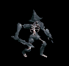 放浪人 1匹 |
 食人鬼部族 9匹 |
弱化食人鬼部族 9匹 |
| 3段階 |  グルジ 1匹 |
 ヴァンパイア軍隊 9匹 |
弱化グルジ 1匹 |
| 4段階 |  デッドドラッグ 1匹 |
 遺跡ガーディアン 9匹 |
弱化お化けの群れ 9匹 |
| 5段階 |  ドレイグル 1匹 |
 カーストリオ 3匹 |
弱化ドレイグル 1匹 |
 砂漠の王 1匹 |
 悪神教団 3匹 |
弱化悪神教団 3匹 |
|
| 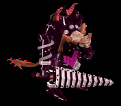 彷徨鎧 1匹 |
 ノワール団 3匹 |
弱化ノワール団 3匹 |
|
 疾駆隊長 1匹 |
 怨讐の剣闘士 3匹 |
弱化疾駆隊長 1匹 |
|
| 6段階 |  デッドアイ 1匹 |
 放浪巨人族 9匹 |
 弱化心臓強奪者 1匹 |
| 7段階 | 心臓強奪者 1匹 |
 悪の翼 9匹 |
弱化放浪巨人族 9匹 |
| 8段階 |  チェイサー 1匹 |
 変異種クモ 9匹 |
 弱化鉄壁の番人 1匹 |
| 9段階 | 鉄壁の番人 1匹 |
 人喰いクラゲ 9匹 |
弱化悪の翼 9匹 |
| 10段階 |  闇魔法師 1匹 |
 魔界のネズミ 3匹 |
弱化魔界のネズミ 3匹 |
 悪神教主 1匹 |
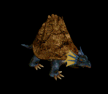 深海の暴君 3匹 |
弱化悪神教主 1匹 |
|
 デビルビショップ 1匹 |
 砂漠の災難 3匹 |
弱化砂漠の災難 3匹 |
|
 リッチキング 1匹 |
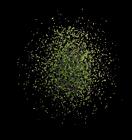 荒廃の群れ 3匹 |
弱化リッチキング 1匹 |
|
| 11段階 |  地獄の狩人 1匹 |
 死の蟲 12匹 |
弱化地獄の狩人 1匹 |
| 12段階 | 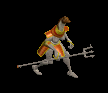 リザードナイト 1匹 |
 ブラッドウルフ 12匹 |
弱化ブラドウルフ 9匹 |
| 13段階 |  リザードキング 1匹 |
 バーサクベアー 12匹 |
 弱化追放オーガ 1匹 |
| 14段階 | 追放オーガ 1匹 |
 変異ガーゴイル 12匹 |
弱化バーサクベア 9匹 |
| 15段階 |  ブラッドランカー 1匹 |
 マーマン兵隊 4匹 |
弱化マーマン兵隊 4匹 |
 ブッチャー 1匹 |
 フレイムリザード 4匹 |
弱化ブッチャー 1匹 |
|
 デスデビル 1匹 |
 追放騎馬族 4匹 |
弱化追放騎馬族 4匹 |
|
 魔界軍団長 1匹 |
 呪われた古木 4匹 |
 弱化魔界軍団長 1匹 |
|
| 16段階 | 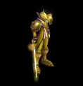 バーサクエルフ 1匹 |
 殺戮カエル 16匹 |
 弱化デッドムーン 1匹 |
| 17段階 |  ストリートキング 1匹 |
 地下界の流刑者 16匹 |
 弱化殺戮カエル 12匹 |
| 18段階 |  デッドムーン 1匹 |
 地下トカゲ 16匹 |
 弱化怨讐の剣闘士 1匹 |
| 19段階 |  コロッセオ血戦士 1匹 |
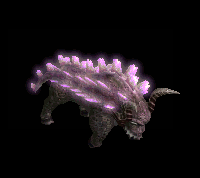 狂気バッファロ 16匹 |
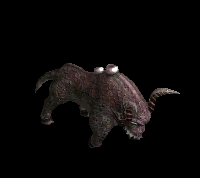 弱化バッファロ 12匹 |
| 20段階 |  呪天使 1匹 |
 夜の姉妹 5匹 |
 弱化夜の姉妹 4匹 |
 デスノイズ 1匹 |
 デビルマンティス 5匹 |
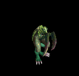 弱化マンティス 4匹 |
|
 デスビースト 1匹 |
 地下山の支配者 5匹 |
 弱化デスビースト 1匹 |
|
| 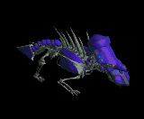 ボルデン 1匹 |
 堕落した天馬 5匹 |
弱化ボルデン 1匹 |
パーティーダンジョン
開始時に エル・スタイン に話したリーダーのLvによって、出現するモンスターLv、クリア報酬が変化します。7つの戦闘エリアのうちランダムで3つのエリアに移動します。
各エリアのボスモンスターを倒す、または全てのモンスターを殲滅すると次のエリアへ移動できます。
各フロアで稀に富豪コボルト(mob)が出現する場合があり、倒すと50万～200万Gを入手できます。
| パーティーリーダーLv | 出現するモンスターLv |
|---|---|
| 400～449 | 400 |
| 450～499 | 450 |
| 500～549 | 500 |
| 550～599 | 550 |
| 600～649 | 600 |
| 650～699 | 650 |
| 700～749 | 700 |
| 750～799 | 750 |
| 800～ | 800 |
クリア報酬経験値
| Lv | ソロ5段階 | 経験の書 有 ソロ5段階 |
ソロ10段階 / PT | 経験の書 有 ソロ10段階 / PT |
|---|---|---|---|---|
| 400～449 | 1000万 | 1500万 | 2500万 | 3750万 |
| 450～499 | 1120万 | 1680万 | 2800万 | 4200万 |
| 500～549 | 1320万 | 1980万 | 3300万 | 4950万 |
| 550～599 | 1480万 | 2220万 | 3700万 | 5550万 |
| 600～649 | 1800万 | 2700万 | 4500万 | 6750万 |
| 650～699 | 2200万 | 3300万 | 5500万 | 8250万 |
| 700～749 | 2640万 | 3960万 | 6600万 | 9900万 |
| 750～799 | 3120万 | 4680万 | 7800万 | 1億1700万 |
| 800～849 | 3600万 | 5400万 | 9000万 | 1億3500万 |
| 850～899 | 4800万 | 7200万 | 1億2000万 | 1億8000万 |
| 900～999 | 8000万 | 1億2000万 | 2億 | 4億5000万 |
試練のクリスタルの欠片を入手可能な秘密ダンジョン
| 秘密ダンジョン | 制限Lv |
|---|---|
| 古代王の墓 | 1～100 |
| マーズ・ルガスの秘密基地 | 100～150 |
| 河口ダンジョンの隠された宝物部屋 | 160～200 |
| ソルティケーブの混沌の空間 | 190～230 |
| 呪いの墓に建つ呪われし塔 | 195～235 |
| 河口ダンジョン'ラ'の隠された洞窟 | 210～300 |
| 小さい傭兵墓に巣食う亡者共の宝物庫 | 225～265 |
| 過ぎし栄光の展示場にある遺物保管所 | 250～290 |
| キングクラブの巣 | 260～300 |
| ハイランド洞窟の堕落した部族 | 290～310 |
| ダークソウルの封印場所 | 290～330 |
| レッドアイの隠されたアジト | 320～345 |
| レッドアイ特殊エージェントのアジト | 340～360 |
| フォーリン望楼の隠された地下監獄 | 355～405 |
| カダーム・ギガスの寺院 | 405～435 |
| ダークエルフ王宮の隠された倉庫 | 440～490 |
| スパインホールのミステリーゾーン | 450～500 |
| 呪いを受けたミズナ洞窟の隠された洞窟 | 500～550 |
| 名も無き遺跡のデーモンキングのねぐら | 535～585 |
| ヘソパルの洞窟 | 550～600 |
| モリネルタワーの隠された研究所 | 580～620 |
| ビックマウスダンジョンのラットキング区域 | 600～640 |
| 閉鎖された時空研究所 | 651～680 |
| ヴァンパイア・キングダム | 681～9999 |
報酬アイテム
ソロ5段階目で終了すると試練の証2個、ソロ10段階・パーティーダンジョンをクリアすると試練の証4個を獲得できます。PT人数によって報酬が変化することはありません。
200個までスタック可能。
スタイン邸宅のフォル・スタイン(10,10)より下記アイテムと交換するのに使えます。
| アイテム | 説明 | ||
|---|---|---|---|
| スタイン家の抵抗力ポーション 3個 |
- 取引不可アイテム - 90秒間、全ての状態異常 抵抗 ※試練のダンジョン内でのみ使用可能。 |
1個 | |
| スタイン家の栄養剤 3個 |
- 取引不可アイテム - 1分の間、CPがいつも最高に維持される。 ※試練のダンジョン内でのみ使用可能。 |
1個 | |
| 試練のダンジョン経験の書 | 所持時、試練のダンジョン完了経験値、褒賞を増加させてくれる。 | 6個 | |
| 異界の強化石 | 深淵の黒曜石を削って磨き上げた強化石。装備の能力を向上させるために使用する。衝撃に大変弱いので、予感には注意が必要。 ※取引不可 |
50個 | |
| 試練のリング[挑戦Lv1] | <基本情報> - 取引不可アイテム - 装備数制限(0/1) - 刻印レベル 1 - 力 13増加 - 知識 13増加 - 魔法抵抗 +5％ <要求能力値> レベル 400 |
170個 (または、 試練のリング 交換チケット) |
|
| 忍耐のクリスタル | - 取引不可アイテム 力を失った試練のリングを復元できる水晶。使用時、リングを再び使用できる。 |
200個 | |
試練のリングは試練のダンジョンのモンスター討伐時に低確率で床にドロップします。
(ソロ・PTのどちらでも全ての討伐モンスターが対象です。)
試練のリングは、 試練の証10個と刻印の書で最大Lv30まで強化できます。
| 試練のリング 強化材料 | ||
|---|---|---|
| 試練の証 | 10個 | |
| 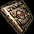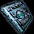 | 刻印の書 または 刻印の書DX | 1個 |
試練のリング[挑戦Lv1]は、刻印Lv15になると試練のリング[勇気Lv15]に進化します。
強化に失敗すると、力を失った 試練のリングに変更されます。
| アイテム | 詳細 | |
|---|---|---|
| 試練のリング[勇気Lv15] | <基本情報> - 取引不可アイテム - 装備数制限(0/1) - 刻印レベル 15 - 力 55増加 - 知識 55増加 - 魔法抵抗 +15％ - 着用時、モンスター討伐経験値 5％ 追加獲得 <要求能力値> レベル 400 |
|
また、試練のリングにオプションを付加することができます。
オプションの詳細は試練のリング強化オプションより確認できます。
| 試練のリング オプション付加材料 | ||
|---|---|---|
| 試練の証 | 10個 | |
| 試練のクリスタル | 2個 | |
| 共鳴石 | 1個 | |
| 結晶石 | 1個 | |
[参考] 試練のダンジョンとは(公式サイト)
[参考] 試練のダンジョン FAQ(公式サイト)